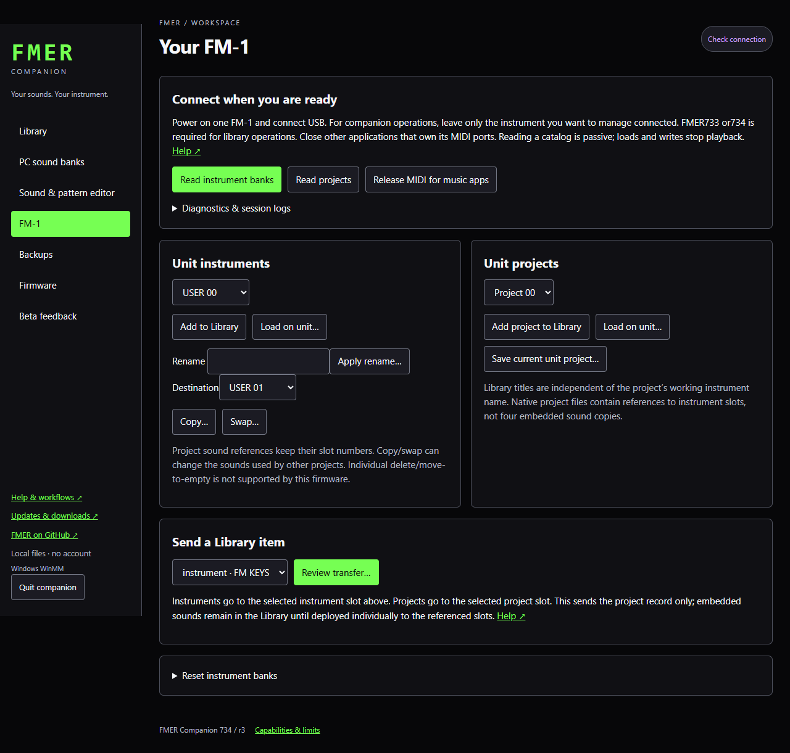

Start here
Connect an FM-1
Device operations are explicit and serialized; opening the app does not access the instrument.
The connection badge observes USB MIDI endpoints without taking control of their ports. Unplugging clears the connection and cached unit catalogs; reconnecting requires Check connection. Detected means Windows sees a MIDI endpoint; verified means the unit answered an identity query. Read banks/projects again after reconnecting or writing. Operation results are labeled with their completion time and are historical records.
Check connection in the top-right corner identifies stock firmware, FMER or the updater. A stock device can be connected without supporting FMER library commands. The operation banner shows progress and keeps its result visible; leave power, USB and controls alone until it says Complete.
- Power the FM-1 and connect USB directly to the computer.
- Close Ableton or release its FMER MIDI ports before companion transfers. Windows MIDI ports may be held exclusively by another application.
- Open FM-1 in the companion and read a bank or project catalog. The transport checks the supported FMER identity rather than guessing a device command.
- Leave keys and controls untouched during backups or writes. Wait for the operation to finish before disconnecting or starting another transfer.
The companion uses Windows MIDI for FMER 733/734/735 library transfers. A stock FM-1 or a different firmware identity is not automatically a compatible library endpoint. Multiple matching devices are refused rather than selecting an arbitrary unit. macOS and Linux transports remain a later packaging and hardware qualification task.
The operation panel reports progress and retains failed-operation details. A disconnected browser does not cancel a write already running in the local server. Keep the server running and reconnect to inspect the operation.
Standalone Bluetooth MIDI is not available in firmware734. USB MIDI and TRS input remain the qualified transports. A second stock FM-1 cannot yet pair with FMER. The vendor radio-stack integration and clock scheduling need separate hardware qualification.
Managing more than one FM-1
Companion currently manages one connected instrument at a time. If the badge says Multiple FM-1s - connect one, disconnect the other units from this computer and choose Check connection. Identical USB names do not identify a particular instrument. A USB port is not a permanent instrument serial number.
If Windows reports that the MIDI port is already in use, close or disable that instrument's ports in Ableton or other music software. Stop diagnostic capture in another Companion instance before retrying. You do not need to delete your Library or reinstall the application.
